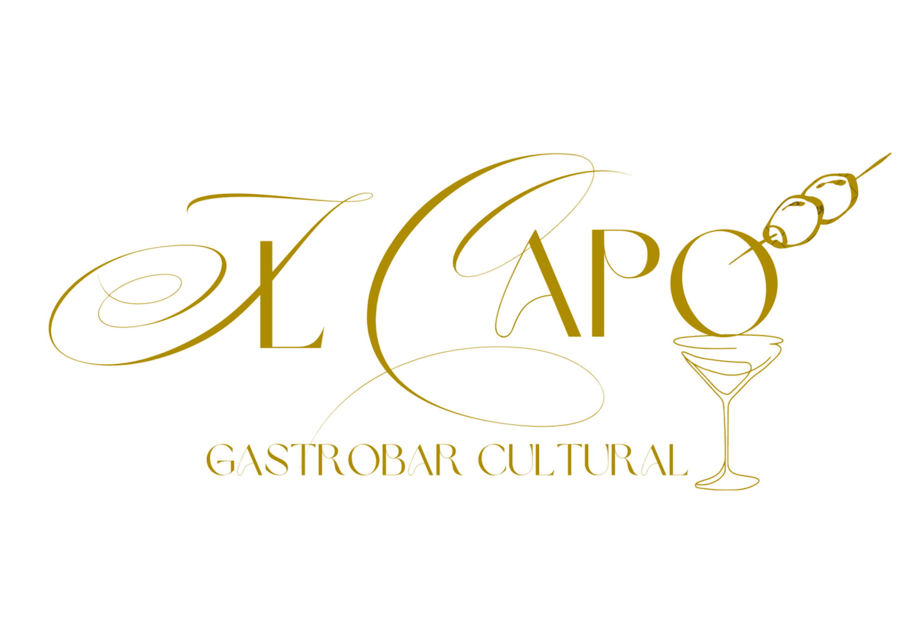
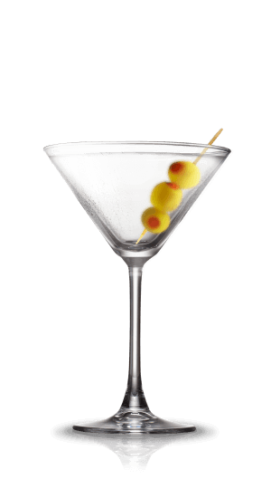
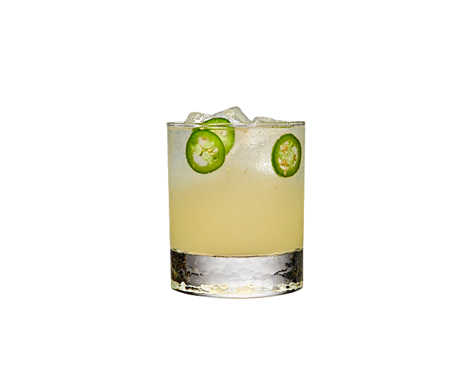
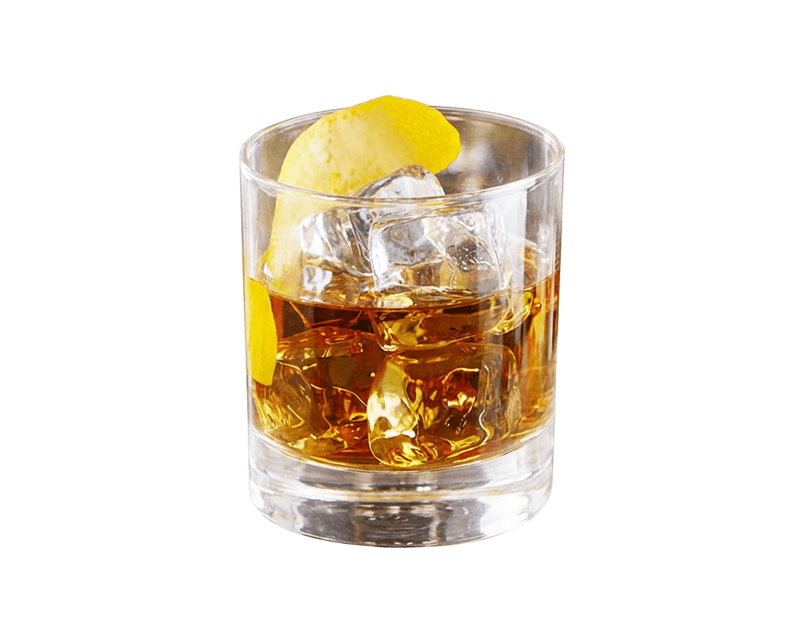
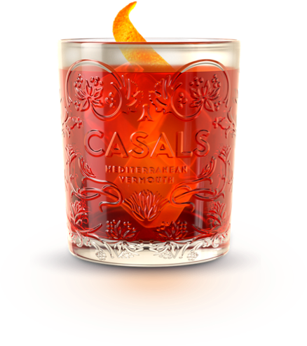
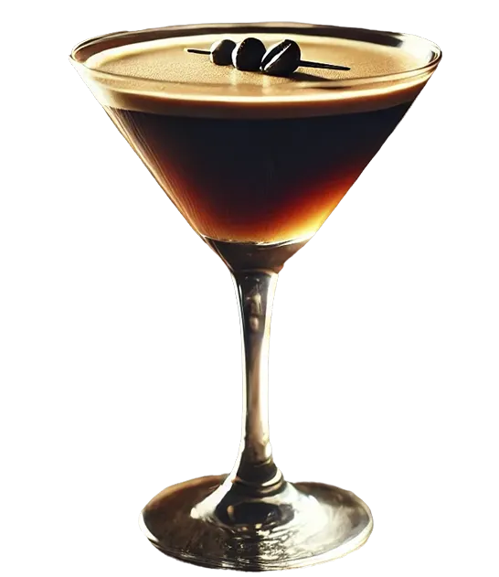
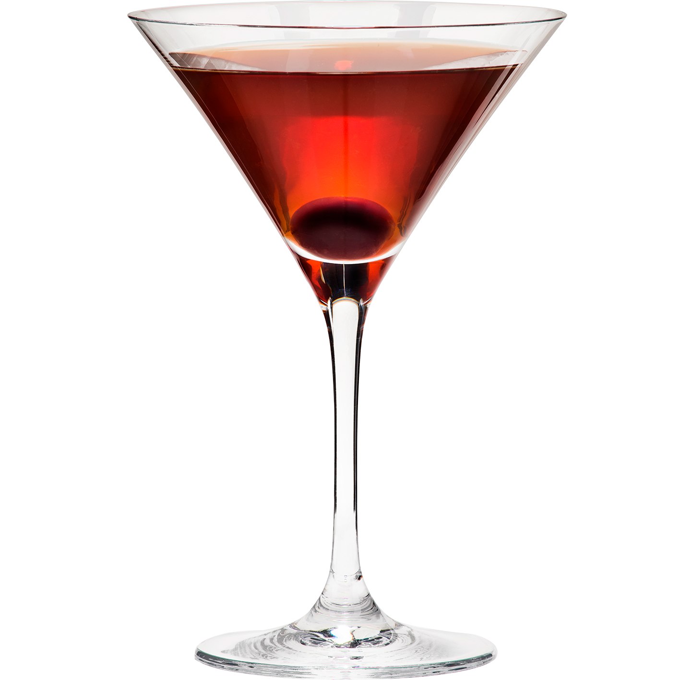
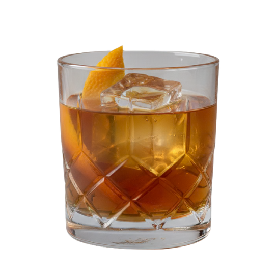
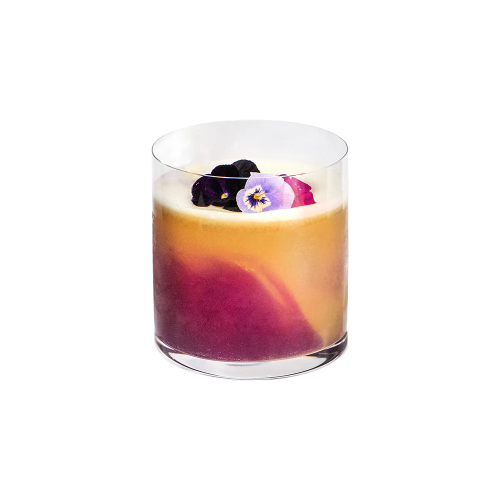
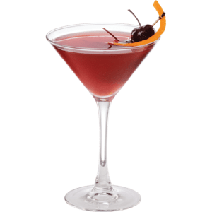

CARTA DE CONTRABANDO
Dry Martini
El rey de la coctelería clásica y el trago elegante por excelencia. Se elabora mezclando ginebra premium y una pizca de vermut seco, removido con hielo (nunca agitado, para mantenerlo cristalino) y servido en la icónica copa de cóctel fría. Se corona con una aceituna o un twist de piel de limón. En el contexto de la mafia, es el trago de los hombres de negocios refinados.

Spicy Jalapeño Margarita
Una variante audaz y electrizante del Margarita tradicional. Se machacan rodajas de jalapeño fresco junto con el zumo de lima y jarabe de agave, para luego agitarlo con tequila blanco y licor de naranja (Triple Sec). Se sirve en un vaso bajo con hielo y el borde escarchado con sal y tajín o chile en polvo. Ofrece un equilibrio perfecto entre lo cítrico, lo dulce y un toque picante que despierta el paladar.

Godfather
Un cóctel con nombre propio que encaja de forma idéntica en tu temática. Es un trago directo, potente y de ritmo pausado. Combina a partes iguales Whisky escocés y Amaretto (licor de almendras italiano). El dulzor del licor suaviza la fuerza del whisky, creando una combinación ahumada y melosa ideal para tomar con un gran cubo de hielo.

Negroni Envejecido
El cóctel italiano por excelencia. Lleva partes iguales de ginebra, Campari (licor amargo) y vermut dulce rojo. Para elevar la experiencia en un local secreto, se suele macerar o envejecer en pequeñas barricas de roble. Su sabor es amargo, complejo y sumamente sofisticado.

Espresso Martini
A pesar de llevar el name "Martini" por la copa en la que se sirve, su alma es totalmente distinta. Es una mezcla energética e intensa de vodka, licor de café, un shot de café espresso recién hecho y un toque de sirope. Al agitarlo con fuerza en la coctelera se genera una densa capa de crema en la superficie que se decora con tres granos de café.

Manhattan
Nacido en Nueva York a finales del siglo XIX, es uno de los pilares de la mixología americana. Se prepara mezclando Rye Whisky (whisky de centeno) o Bourbon, vermut dulce y unas gotas de angostura. Se sirve colado en copa fría y se adorna con una cereza al marrasquino. Es un trago robusto, dulce y especiado.

Old Fashioned
Considerado por muchos como el primer cóctel de la historia. Se elabora disolviendo azúcar con unas gotas de amargo de Angostura y un chorrito de agua directamente en el vaso, para luego añadir Bourbon o whisky de centeno and hielo. Se aromatiza exprimiendo los aceites de una corteza de naranja sobre el vaso. Un trago seco y con mucho carácter.

Vieux Carré Imperial
Nombrado en honor al Barrio Francés de Nueva Orleans, este cóctel es un monumento a la complejidad líquida. Mezcla a partes iguales Whisky de centeno premium y Cognac V.S.O.P., combinados con Vermut dulce y licor herbal Bénédictine. Se remueve suavemente con hielo y se añaden dos tipos de amargos (Angostura y Peychaud). El resultado es un trago corto de color caoba, denso, complejo, con notas ahumadas, dulces y medicinales. Un trago fuerte, lento de beber, diseñado para los verdaderos jefes.

Millionaire Margarita
Haciendo honor a su nombre, este es un trago de la era de la Prohibición diseñado para los gángsters que coronaban los mejores negocios. Lleva una base compleja de ron añejo, ginebra premium, un toque de licor de naranja (Grand Marnier) y unas gotas de granadina real para darle un color rojizo profundo. Se agita con una clara de huevo para crear una capa de espuma densa y aterciopelada en la superficie. Es un cóctel rico, dulce, potente y con una textura que grita opulencia.

Boulevardier
Una variante del Negroni nacida en los años 20 en París, ideal para los amantes del buen Bourbon. En lugar de usar ginebra, este cóctel combina el Bourbon (whisky americano) con Campari y vermut dulce rojo. El cambio sustituye la rigidez botánica de la ginebra por la calidez dulce y amaderada del whisky, logrando un trago oscuro, denso y misterioso.
